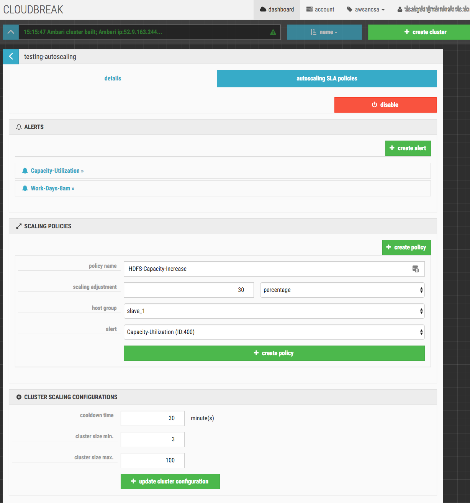

Auto-Scaling
The purpose of auto-scaling is to apply SLA scaling policies to a Cloudbreak-managed Hadoop cluster.
How It Works
The auto-scaling capabilities is based on Ambari Metrics - and Ambari Alerts. Based on the Blueprint
used and the running services, Cloudbreak can access all the available metrics from the subsystem and define alerts based on this information.
Beside the default Ambari Metrics, Cloudbreak includes two custom metrics: Pending YARN containers and Pending applications. These two custom metrics works with the YARN subsystem in order to bring application level QoS to the cluster.
Enable auto-scaling via Browser
 Full size here.
Full size here.
Alerts
Auto-scaling supports two Alert types: metric and time based.
Metric-based Alerts
Metric based alerts are using the default (or custom) Ambari metrics. These metrics have a default Threshold value
configured in Ambari - nevertheless these thresholds can be configured, changed or altered in Ambari.
In order to change default threshold for an Ambari metric please follow these steps:
- Go to Ambari UI and open the
Alertstab. - Select an alert from the list.
- Click on the
Editon theConfigurationpanel. - You can change the values in the
Thresholdsection.
 Full size here.
Full size here.
Setting up Metric-based Alert
To create a new Cloudbreak metric based alert follow these steps:
- Fill out
alert name- Only alphanumeric characters (min 5, max 100 characters) can be applied
- Fill out
descriptionwith a details here about the new alert for the cluster - Select a
metricthen itsdesired state- The Ambari metric based on the installed services and their state based on the Ambari threshold value:
- OK
- WARN
- CRITICAL
- The Ambari metric based on the installed services and their state based on the Ambari threshold value:
- Fill out the time
periodin minutes to define the metric state endurance after the alert has been triggered- Only numeric characters can be applied
 Full size here.
Full size here.
Time-based Alerts
Time based alerts are based on cron expressions and allow alerts to be triggered based on time.
Setting up Time-based Alert
To create a new Cloudbreak time based alert follow these steps:
- Fill out
alert name- Only alphanumeric characters (min 5, max 100 characters) can be applied
- Fill out
descriptionwith a details here about the new alert for the cluster - Select an appropriate
time zonefor this alert - Fill out the
cron expressionto define the time-based job scheduler (cron expression) for this alert
 Full size here.
Full size here.
Scaling Policies
Scaling is the ability to increase or decrease the capacity of the Hadoop cluster or application based on an alert.
When scaling policies are used, the capacity is automatically increased or decreased according to the conditions defined.
Cloudbreak will do the heavy lifting and based on the alerts and the scaling policy linked to them it executes the
associated policy. We scaling granularity is at the host group level - thus you have the option to scale services
or components only, not the whole cluster.
Setting up Scaling Policy
To create a new Cloudbreak scaling policy follow these steps:
- Fill out
policy name- Only alphanumeric characters (min 5, max 100 characters) can be applied
- Select a type first then a value for the
scaling adjustment:node countThe number of nodes (added or removed)percentageThe computed percentage adjustment based on the cluster sizeexactThe given size of the cluster
- Select the Ambari
host groupwhere the cluster to be scaled - Select the previously created Cloudbreak
alertto apply the scaling policy
 Full size here.
{kind=link}
Cluster Scaling Configuration
An SLA scaling policy can contain multiple alerts. When an alert is triggered a scaling adjustment is applied,
however to keep the cluster size within boundaries a cluster size min. and cluster size max. is attached to the
cluster - thus a scaling policy can never over or undersized a cluster.
In order to avoid stressing the cluster we have introduced a cooldown time period (in minutes) - though an alert is
raised and there is an associated scaling policy. The system will not apply the policy within the configured time
frame.
NOTE In an SLA scaling policy the triggered rules are applied in order.
 Full size here.
Full size here.
Explanation of the parameters:
cooldown timeThe cluster lockdown period (in minutes) between scaling eventscluster size min.the minimum cluster size limit, despite scaling adjustmentscluster size max.the maximum cluster size limit, despite scaling adjustments
Downscale Scaling Considerations
Cloudbreak auto-scaling will try to keep a healthy cluster, thus does several background checks during downscale.
- We never remove
Application master nodesfrom a cluster. In order to make sure that a node running AM is not removed, Cloudbreak has to be able to access the YARN Resource Manager - when creating a cluster using thedefaultsecure network template please make sure that the RM's port is open on the node. - In order to keep a healthy HDFS during downscale we always keep the configured
replication factorand make sure there is enoughspaceon HDFS to rebalance data. - Also during downscale in order to minimize the rebalancing, replication and HDFS storms we check block locations and compute the less costly operations.